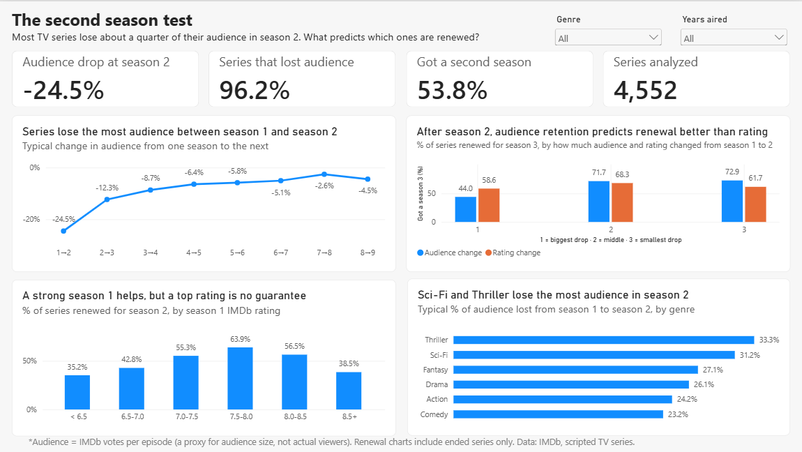

The question
Renew it, or let it go?
A streaming platform needs simple rules for renewing series. Viewing data is private, so I used IMDb: 12.9 million titles, narrowed to seasons with enough ratings to trust.
Audience
IMDb votes per episode. A proxy, not viewers.
Quality
Average IMDb episode rating.
Bars not to scale. Every filter is in the decision log.
Where the audience goes
The biggest drop comes at season 2
The median series loses 24.5% of its audience at season 2. After that, losses shrink to single digits.
Change in audience vs the previous season
Line: median series. Band: middle half of series.
Before season 2
A strong first season helps, but a top rating is no guarantee
Renewal peaks at a season 1 rating of 7.5 to 8.0, then falls. Very high ratings partly reflect small fan bases.
Series renewed for season 2, by season 1 rating
8,252 series that have already ended.
The pilot episode alone shows the same shape.
After season 2
Watch the audience, not the rating
Series that lost the most audience in season 2 were renewed 44% of the time, against 72% for the rest. Rating change barely mattered.
Series renewed for season 3
3,801 ended series, split into thirds by the change from season 1 to 2.
How I checked myself
Three ways this data could have fooled me
Votes keep piling up
Old seasons had more years to collect votes.
Re-ran on older seasons and by era. The pattern held.
Only survivors reach season 6
Late seasons include only successful series.
Followed one fixed group of 1,025 series.
Running series have no ending yet
Two seasons today might be ten later.
Renewal questions use ended series only.
Recommendations
Two red flags before renewing
After season 1
Season 1 rated below 7.0
Only 35–43% got a season 2, against 63.9% at 7.5–8.0.
After season 2
Season 2 lost over 30% of the audience
Only 44% got a season 3, against about 72% of the rest.
Patterns from past series, not causes. IMDb votes measure engagement, not audience size.
The dashboard
The same findings, built for exploring
Power BI, star schema, DAX measures, filters by genre and years.
